Fishermancy¶
Fishermancy is a new skill school, featuring 10 hybrid skills that grant fishy new combat options, focusing on a new Seasick status that synergizes with water damage.
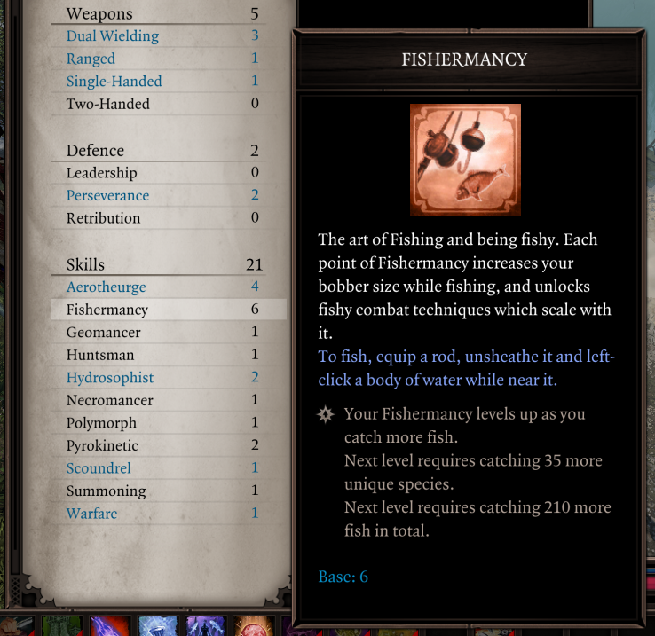
Fishermancy skills showcase!
Unlike normal skill abilities, you cannot invest points into Fishermancy.
Instead, your Fishermancy levels up as you catch more fish and discover new species. You'll have to grow as an angler to unleash its full potential!
Your bobber in the fishing minigame also grows larger as you level up Fishermancy.
Skills¶
Fishermancy offers 10 new skills, each combining the power of fish & the sea with one of the existing skill schools, giving Fishermancy unparalleled versatility - just about anyone can find something of interest in adding a pinch of Fishermancy to their arsenal!
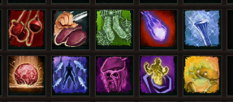
A whole school of fishy skills!
Each skill requires both Fishermancy and another school to learn & memorize, imbuing that school's main themes with that of fishing!
Many of the skills apply a new Seasick status: Seasick reduces water and air resistance and causes targets to suffer Magic Armor damage (or 1 Harried stack in EE) when hit by water damage, consuming a turn of the status.
Fishermancy has support for the Epic Encounters 2 overhaul; if you have it installed, the skills are be rebalanced to fit its design and gain Source Infusions!
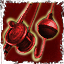
Reel In (Warfare)¶
Hooks your enemies and pulls them towards you, dealing more piercing damage the further they fly! Use high ground range bonuses to pull off epic catches!
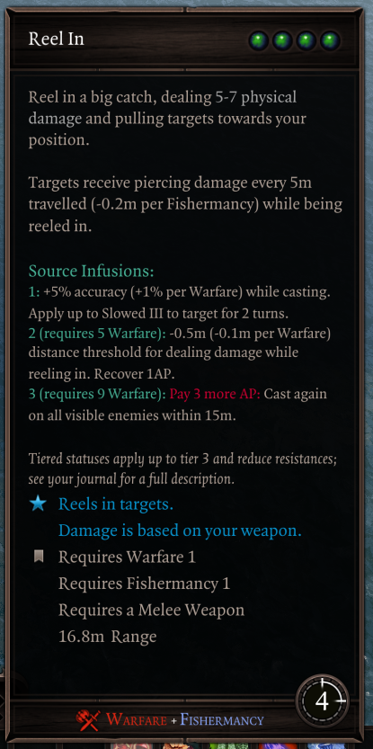
Deploy Fishnets (Huntsman)¶
Clutter the battlefield with fishnets, webbing any unsuspecting characters that come near them after arming. Careful, as the fishnets can catch both enemies & allies!
Source Infusion 3 grants the Trawling Grindset, allowing you to perform Predator reactions on the prey your fishnets catch.
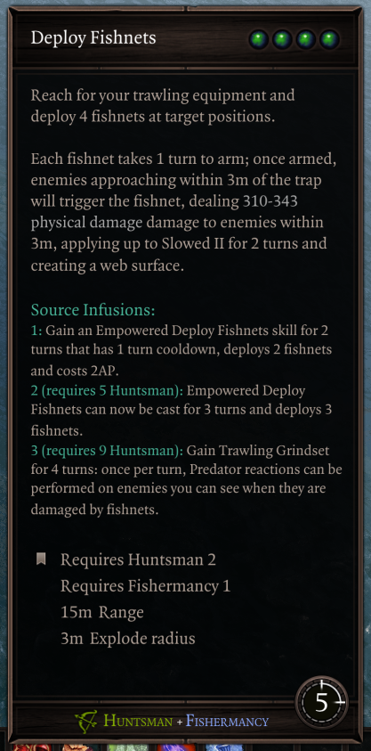
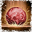
Blast Canon Ball (Geomancer)¶
Blast away enemies with the canonical canon ball, scattering them and dealing extra damage from collateral impact. Strangely, the ball is prone to bouncing...
It's recommended not to try SI3 at home.
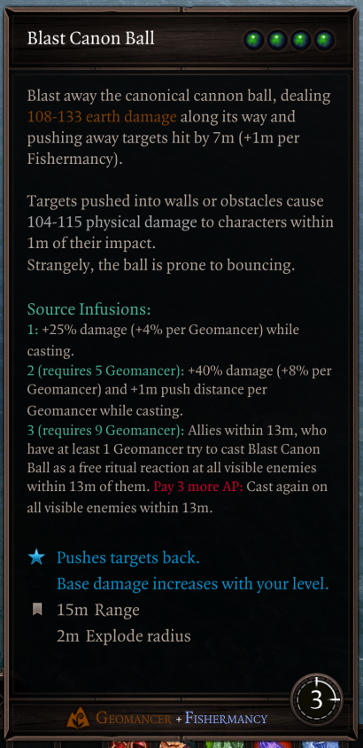
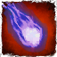
Blue Fireball (Pyrokinetic)¶
You memed it, we made it - the Blue Fireball is a plain but reliable way of getting enemies Seasick.
Source Infusions allow it to apply Seasick en-masse.
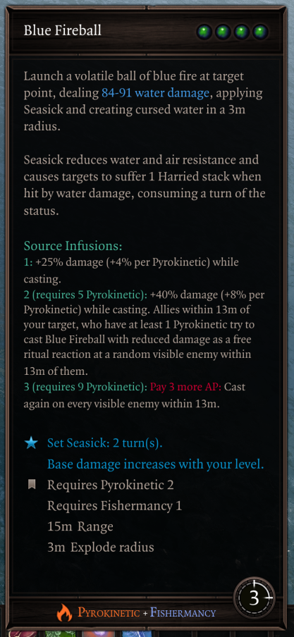
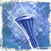
Blow the Hornpipe (Hydrosophist)¶
Hype up your allies and hype down the enemies to make them more prone to Seasick!
Source Infusions give it restorative benefits and can considerably decrease Hydrosophist skill cooldowns.
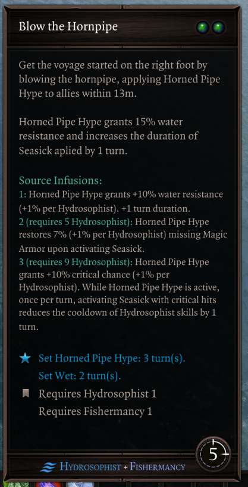
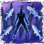
With the Currents (Aerotheurge)¶
Become one with the fishes, gaining personal bodyguards ready to bite incoming hostiles.
Source Infusions allow it to additionally inflict Battered and considerably increase Seasick duration from all sources, letting you proc it more times.
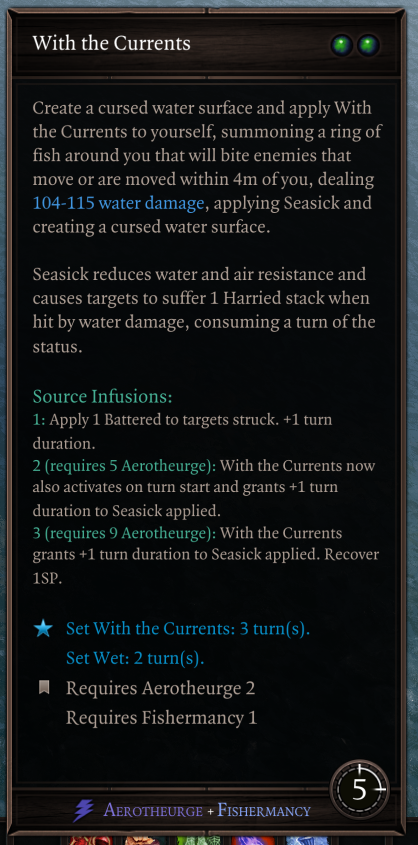
Summon Swashbuckler (Necromancy)¶
Call ye matey and get sailin'! The Swashbuckler grants a water weapon damage aura, making it easy to proc Seasick for nearby allies.
Source Infusions give him a turret role, allowing him to emulate Throw Knives at enemies that Seasick procs on.
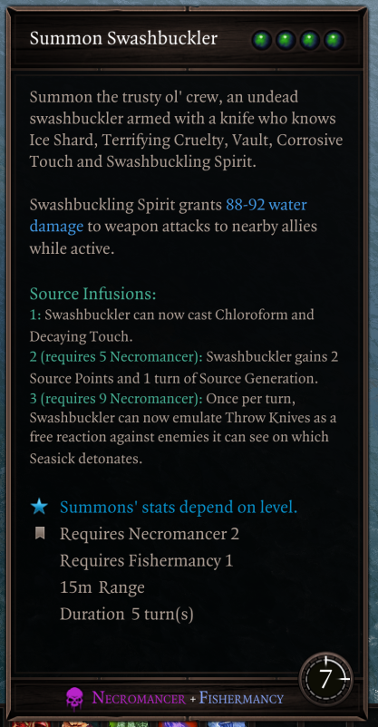
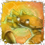
Return to Crab (Polymorph)¶
Drop the burdens of your current body and return to the good ol' times. The Crab form can tip-toe around surfaces and has a custom arsenal of buffs, debuffs and pincers.
Source Infusions allow the crab to party harder and draw out its innate spellcasting affinities.
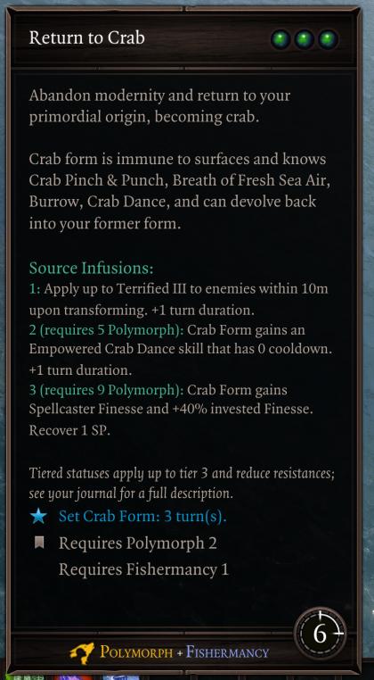
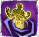
Turn on The Tides (Summoning)¶
Bring on the waves, having your summons ripple at the start of their turns, turning them into another source of Seasick procs.
Source Infusions allow regular allies to also proc the effect, as well as giving Hydrosophist to all summons - allowing any summon to participate in its ritual reactions.
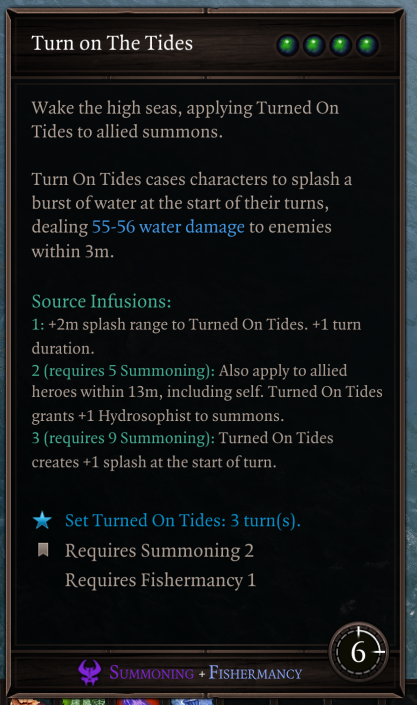
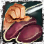
Prepare Sashimi (Scoundrel)¶
Turns enemies into sashimi, and make the remaining strugglers Seasick from the food poisoning on your knife, or something.
Work in progress
This skill is currently lame and we're planning on reworking it entirely.
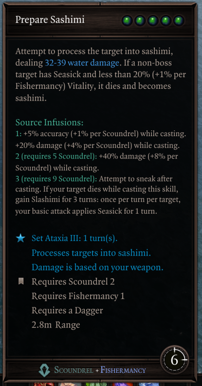